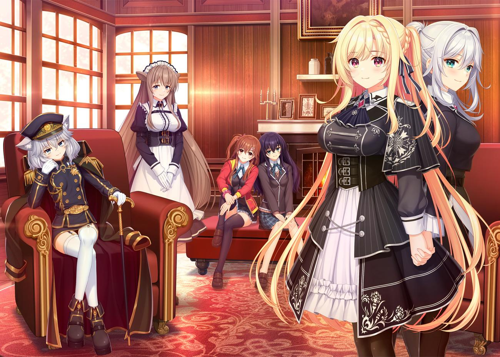

Para Heroine

Main Heroine disini disejajarkan dengan 3 faksi utama dalam cerita, mengeksplorasi masing2 ideologi politik pada domisili asalnya sehingga menjadikan tiap route nya khas dan menjamin reading experience yang berwarna.